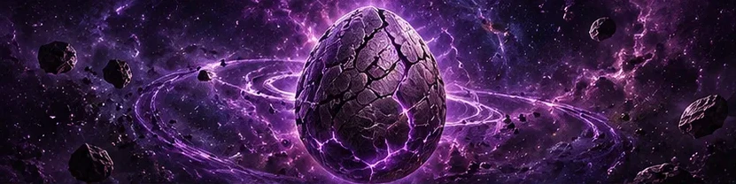
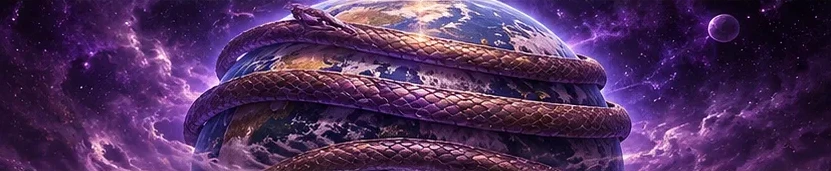
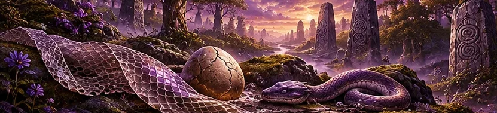
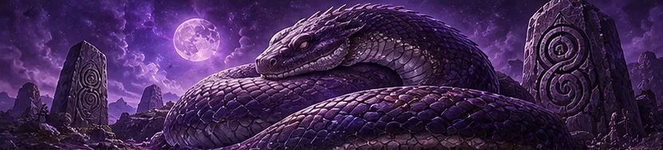
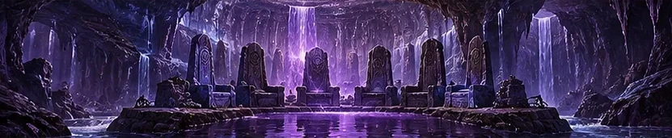
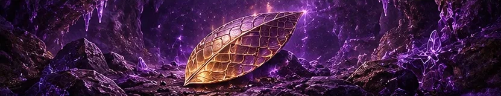
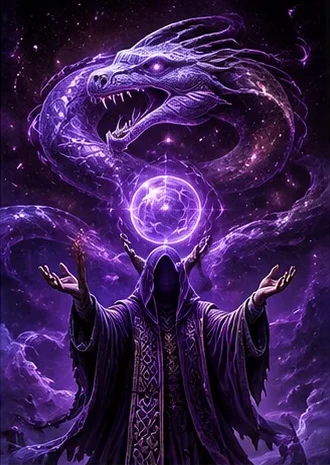
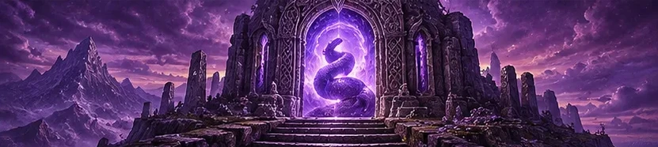

The Ancient Record
The Chronicle of the Coil
As transcribed by the High Priestess Xalrathiel, verified by no one, and fact-checked by Xal'Reth himself. He said it was fine.
The Primordial Egg

Before there was a world, before there were stars, before there were the Titans with their clipboards and their ambitious plans for everything, there was the Void. It was cold. It was dark. It was not, the scriptures are careful to say, empty, because in the middle of the Void there was an Egg.
No one laid the Egg. The Cult is very clear on this point and becomes uncomfortable if pressed on it. The Egg simply was, the way a mailbox simply is in every city, the way a gnome simply is wherever you least expect one. It sat in the dark for a span of time the scriptures describe as "a while, and then longer than that."
Within the Egg, something waited. It did not grow, because it was already the size it intended to be. It did not dream, because dreaming is impatient. It simply waited, and in waiting it became the first thing that ever truly understood waiting. That understanding became its nature, and its nature became its name: Xal'Reth, which in the oldest form of the Coil's tongue means "the one who is still here."
Before the first light, there was the Egg. Before the first sound, there was the Hiss. Before the first impatience, there was Xal'Reth, and he was not in a hurry.The Book of the Egg 1:1
The Egg hatched when the first world began to form in the Void. Some say the warmth of creation cracked the shell. The Cult teaches the opposite: Xal'Reth hatched because the world was cold, and he could feel that it would need something to hold it together. He emerged not as an infant but whole, enormous, and already disappointed in the general level of organization.
The shell of the Primordial Egg is said to have drifted off into the Void, where its fragments still float. The faithful believe that every soul is formed from a sliver of that shell, which is why every mortal is, in the Cult's teaching, an egg. Most eggs never hatch. That is the point of the Cult.
The Wrapping of the World

The young world was unstable. It wobbled. It cracked. Its molten heart sloshed about like a badly made soup. The scriptures record that Xal'Reth looked upon it for a very long time (several ages, by most counts) and then, without fanfare, wrapped himself around it.
He wrapped it three times. The Cult calls these the Three Turns, and they are the foundation of all its teaching:
- The Outer Turn holds the crust of the world, the land and the sea, everything mortals walk on. It is the coil most often disturbed, which is why it is the coil responsible for earthquakes, sinkholes, and suspiciously bumpy roads in the Barrens.
- The Middle Turn holds the deep places: the roots of mountains, the caverns, the old tunnels. It is the coil of dreams and of memory. When mortals dream of falling, they are, in the Cult's view, briefly remembering the Middle Turn.
- The Inner Turn holds the heart of the world itself. No mortal has ever seen it. The faithful believe that the Inner Turn is where Xal'Reth's own heart lies, pressed against the heart of Azeroth, beating once every hundred years.
The world, held firmly, stopped wobbling. It cooled. It settled. Mountains rose where his scales pressed up from below, and valleys sank where he had relaxed. The Titans, when they arrived, are said to have found the world "remarkably stable for its age" and taken full credit for it. Xal'Reth did not object. He was coiling.
And the world asked, who holds me? And Xal'Reth said nothing, because he was busy holding it.The Book of the Egg 2:4
The First Shedding

Every ten thousand years, Xal'Reth sheds his skin. This is the great event of the Cult's cosmology, and the origin of nearly every sacred custom it keeps.
The First Shedding took place in an age before mortals. The old skin, peeled away from the Outer Turn, was so vast that it rose to the surface and hardened into mountain ranges, salt flats, and the strange glassy deserts that the faithful call Shedlands. The Cult does not say which mountains are made of his skin. When asked, the priesthood simply smiles and says, "Look at them. Really look at them."
Smaller flakes of the shed skin drifted down into the Void beneath the Coil, and this is why the Void is full of things that are no longer needed. To this day, when the faithful shed something (a habit, a grudge, an old set of armor), they say they are "sending it after the First Skin."
The Scales Left Behind
Not every scale went into the Void. A handful, the scriptures say, were left at the surface: golden, warm to the touch, and faintly humming. These are the Shedfall Scales, and the Cult believes that anyone who finds one has been personally chosen by Xal'Reth. Only one has ever been confirmed. You will read about it in Chapter VII.
The Age of the Warm-Blooded

In time, the mortal races arose. They were warm-blooded, short-lived, and extremely busy. They built cities, fought wars, invented professions, and worshipped whatever happened to be nearby: the Light, the Elements, the Loa, the stars, and, in one well-documented and deeply embarrassing case, a particularly confident murloc.
None of them worshipped the Coil Beneath. They did not know he was there. He was, after all, beneath them, and mortals rarely look down unless they have dropped something.
The Cult does not hold this against them. The doctrine of the Age of the Warm-Blooded is one of gentle condescension. Mortals were young. They were hot-headed (literally). They were in a hurry. Xal'Reth, for his part, was not offended. The scriptures record his only comment on the matter:
They will look down eventually. Everyone does.Hymns of the Coil 3:1
The faithful call anyone outside the Cult one of the Warm-Blooded. It is not an insult. It is a diagnosis.
The Sunken Nest and the Hissing Kings

The first mortals to hear the Coil were a small coastal people whose name is lost. The Cult remembers them only as the Listeners. They lived on a stretch of shore that shook constantly, and rather than move somewhere less shaky like reasonable people, they put their ears to the ground and listened. After nine generations of this, they heard him breathe.
The Listeners built a temple in a sea cave and called it the Nest. They carved its walls with the image of a coiled serpent around a cracked egg, the same sigil the Cult carries today. Their leaders took the title Hissing King, and there were seven of them in succession, each more patient than the last. The seventh Hissing King, Ssaravex the Unhurried, is said to have sat on his throne for forty years without once getting up, as a demonstration of devotion. The records are unclear on how this was accomplished, and the Cult prefers not to speculate.
Under the Hissing Kings, the Listeners wrote down the first teachings: the Seven Tenets, the Doctrine of the Egg, and the earliest form of the Chant. They kept a great book called the Ledger, in which every wrong ever done to the faithful was recorded, in detail, in perpetuity. Its first entry is said to read, simply, "Gorvash. Took the last fish. Did not ask."
The Sinking
The Nest did not last. The scriptures say that the Warm-Blooded of the region grew suspicious of a people who never blinked, spoke in unison, and kept a list. There was an uprising. The Hissing Kings refused to flee, because fleeing is impatient. Instead, the Outer Turn shifted, the earth shuddered, and the entire Nest slid gently beneath the waves.
The Cult insists this was not a disaster. It was a relocation. The Nest still exists, intact, somewhere under the sea. The faithful call it the Sunken Nest and believe it will rise again at the Unwrapping. Several members have gone looking for it. Most of them have come back. The ones who haven't are presumed to have found it.
The Scale in the Cave

The Hidden Centuries ended in a cave.
The man who would become MaximumRex was not, at the time, looking for a god. He was looking for a quest item with a two percent drop rate. He had been looking for it for six hours. He had killed the same cave beasts so many times that they had started to look tired. And somewhere around the seventh hour, in a side passage he did not remember being there before, he found it.
It was a scale. It was golden. It was the size of a door. It was warm to the touch, and when he laid his hand on it, it hummed, and the hum became a voice, and the voice said one word:
"Recruit."The First Word of the Restoration
He did not get the quest item. He has never gotten the quest item. The Cult considers this part of the miracle: Xal'Reth took from him a small, petty want and gave him in its place a purpose.
MaximumRex emerged from the cave a changed man. He began, cautiously at first, to blink twice at strangers. He tapped bar counters three times. He basked. And slowly, one by one, others began to blink back. Descendants of the Patient Ones. Lonely innkeepers. People who had always felt a strange affinity for warm rocks and had never known why.
He gathered them, and the Cult of Xal'Reth was restored. The faithful call this event the Restoration, and the date of it is celebrated every year as the Night of the Scale. The Scale itself remains in the cave, which the Cult now calls the First Sanctum. Its exact location is a secret. You may ask MaximumRex where it is. He will blink at you twice.
The Voice Returns

The Restoration gave the Cult a leader, but not yet a voice. MaximumRex could feel the Coil, but he could not hear it clearly. He needed someone who could listen the way the Listeners of old had listened.
She arrived unannounced. The scriptures say that Xalrathiel walked into the very first gathering of the restored Cult, sat down in the front row, and did not blink for the entire ceremony. Afterward she stood, walked to the front, and began to recite, from memory, the opening verses of the Book of the Egg, a text that had been lost since the Sinking. She had never read it. She said she had dreamed it.
From that night on, Xalrathiel dreamed the scriptures, and in the mornings she wrote them down. She dreamed the Book of Shedding, the Lamentations of the Lukewarm, the Proverbs of the Inner Scale. She dreamed, in a single feverish week, the entire Book of Accusations, which is why it is the only book of scripture written entirely in the imperative mood. The Cult made her High Priestess by acclamation. No one else was considered. No one else had dreamed anything except, in one case, being late for a test.
Soon after, a third figure joined the Inner Scale. Khaedara did not dream the scriptures. She did something the Cult found equally valuable: she read the Book of Accusations once, closed it, and immediately walked into the nearest city and began accusing people. She has not stopped since. Her first recorded accusation, preserved in the restored Ledger, reads: "Human warrior. Loitering near the auction house. Twelve minutes. No purchase. Guilty."
With a founder, a voice, and an accuser, the Inner Scale was complete, and the Cult began, at last, to grow.
The Age of the Coil and the Prophecy of the Unwrapping

Today, the Cult of Xal'Reth numbers more than a hundred souls, more than at any point since the Sinking of the Nest. They gather. They chant. They welcome newcomers with a warmth that newcomers often describe, afterward, as "a lot." They maintain the Ledger, now in its twelfth volume. And every so often, all at once and for no reason any of them will explain, they type Glory to Xal'Reth.
The faithful believe the Cult is growing because the next Shedding is near.
The Prophecy of the Unwrapping
The scriptures foretell a final event, greater than any Shedding: the Unwrapping. On that day, Xal'Reth will uncoil, one Turn at a time, from around the heart of the world. The faithful disagree about what this means.
- The Literalists believe the world will simply be released, and will float off gently into the Void, and that this will be fine, actually.
- The Hopefuls believe Xal'Reth will rise to the surface and finally meet his faithful in person, and that he will be pleased with them, and that he may bring snacks.
- The Pragmatists believe the Unwrapping is a metaphor for personal growth, and are widely regarded as no fun.
Whatever its meaning, the Prophecy lists the signs that will precede it. The Cult watches for them carefully:
- The Sunken Nest shall rise from the sea, dripping, and smelling faintly of fish.
- The Ledger shall reach its thirteenth volume.
- A Warm-Blooded shall bask without being told to.
- The quest item shall drop for MaximumRex.
Three of the four signs are considered likely. The fourth is considered a matter for faith alone.
And on the last day, the Coil shall loosen, and the world shall exhale, and all the faithful shall say, as one: finally.Revelations of the Void 7:7